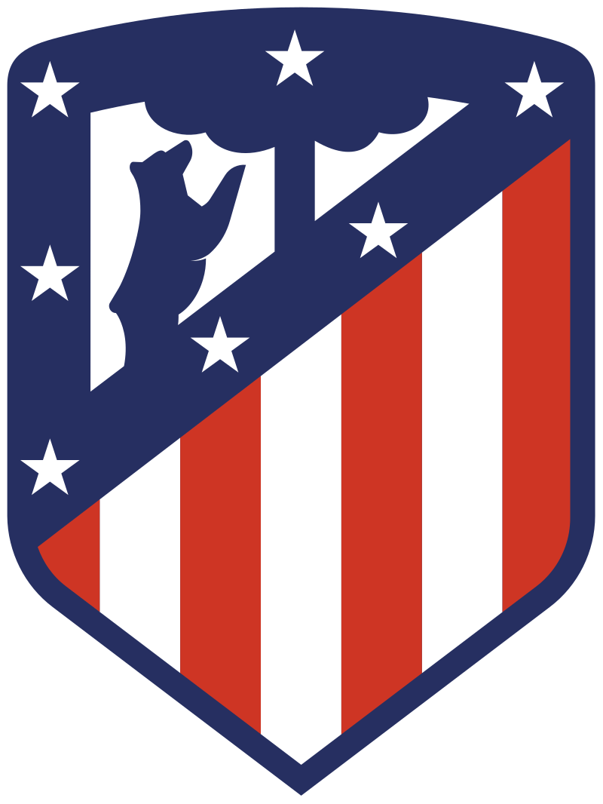
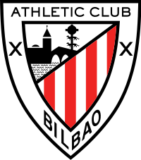
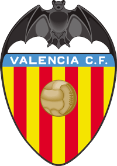
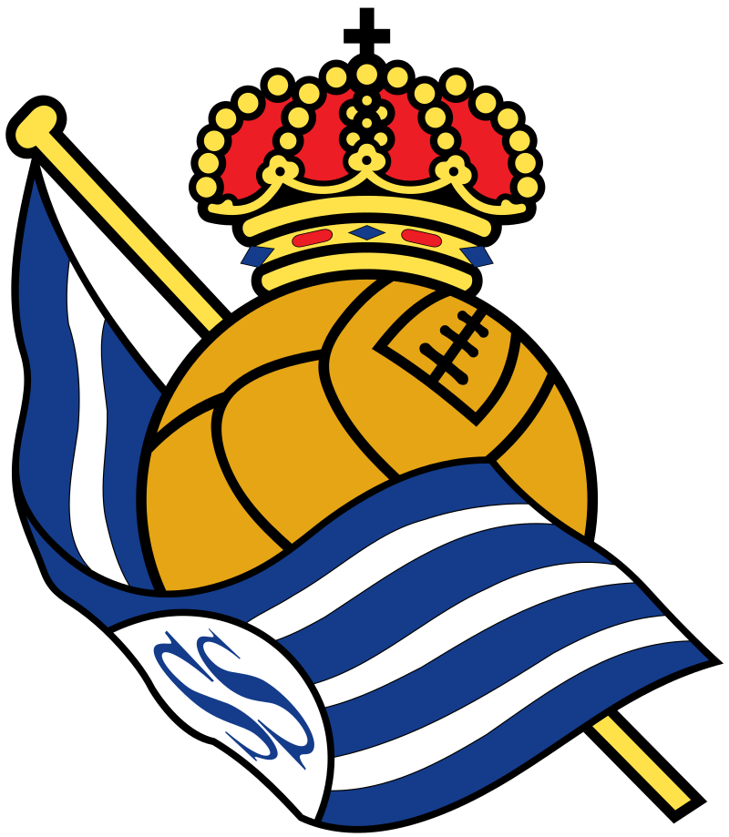
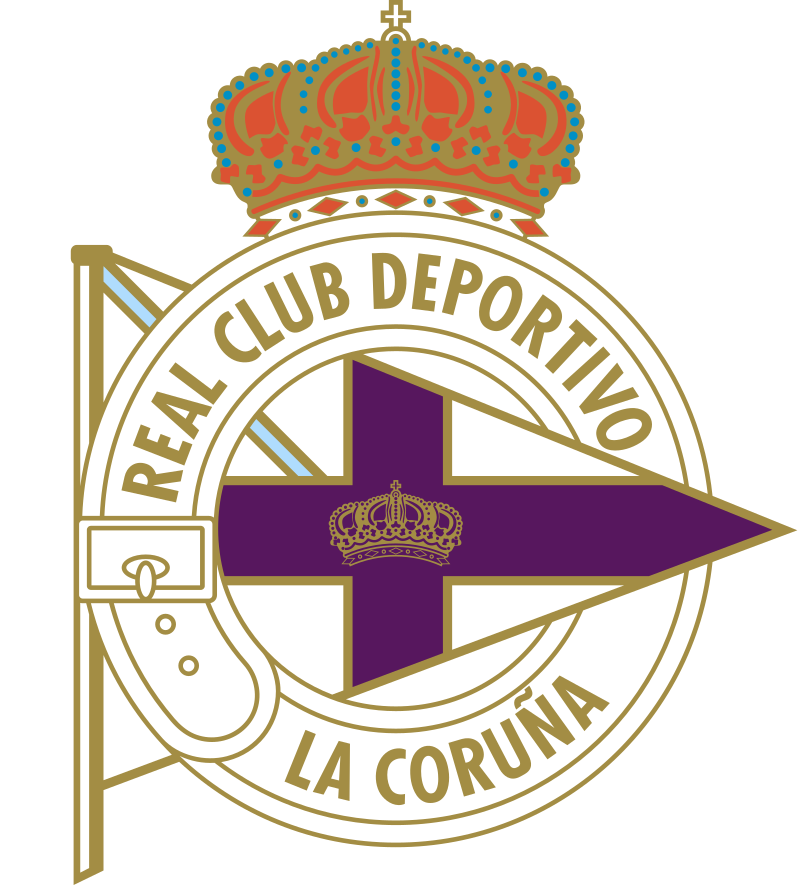
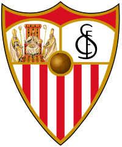
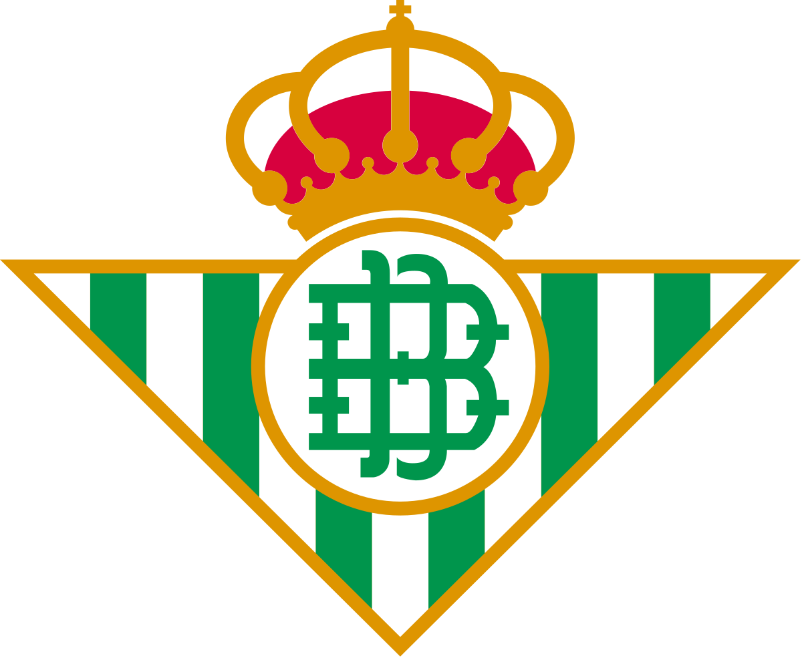

لدوري الإسباني الدرجة الأولى أو لا ليغا (بالإسبانية: La Liga) بطولة رسمية تأسست عام 1929، وهو دوري الدرجة الأولى لبطولة الدوري الإسباني، وتتنافس فيه الأندية الإسبانية لكرة القدم من أجل الفوز بلقب الدوري الذي يعتبر من دوريات النخبة على مستوى العالم وتخوض جميع الأندية 38 مباراة. انطلقت المسابقة عام 1929 وفاز فيها نادي برشلونة. يتنافس في الدوري 20 فريق الفرق الثلاثة الأقل نقاط تهبط لدوري الدرجة الثانية.60 نادياً شارك في الدوري الإسباني على مدى تاريخه، 9 منهم توج باللقب، ومنذ 1950 سيطر ناديا ريال مدريد وبرشلونة على أغلب بطولات الدوري. ريال مدريد حقق اللقب 34 مرة وهو رقم قياسي بينما حقق نادي برشلونة اللقب 26 مرة، مع ذلك استطاعت أندية أخرى تحقيق اللقب وهي: أتلتيكو مدريد، وأتلتيك بيلباو، وفالنسيا، وريال سوسيداد، وديبورتيفو لاكورونيا، وريال بيتيس، وإشبيلية.
كأس الدوري الأسباني
ستاد سانتياجو برنابيو , ملعب نادي ريال مدريد
سنوات البطولة |
عدد الألقاب |
النادي |
| 1931–32، 1932–33، 1953–54، 1954–55، 1956–57، 1957–58، 1960–61، 1961–62، 1962–63، 1963–64، 1964–65، 1966–67، 1968–69، 1971–72، 1974–75، 1975–76، 1977–78، 1978–79، 1979–80، 1985–86، 1986–87، 1987–88، 1988–89، 1989–90، 1994–95، 1996–97، 2000–01، 2002–03، 2006–07، 2007–08، 2011–12، 2016–17، 2019–20 | 34 لقباً |
 ريال مدريد |
| 1929، 1944–45، 1947–48، 1948–49، 1951–52، 1952–53، 1958–59، 1959–60، 1973–74، 1984–85، 1990–91، 1991–92، 1992–93، 1993–94، 1997–98، 1998–99، 2004–05، 2005–06، 2008–09، 2009–10، 2010–11،2012–13، 2014–15، 2015–16، 2017–18، 2018–19 | 26 لقباً |
 برشلونة |
| 1939–40، 1940–41، 1949–50، 1950–51، 1965–66، 1969–70، 1972–73، 1976–77، 1995–96، 2013–14، 2020–21 | 11 لقباً |
 أتليتكو مدريد |
| 1929–30، 1930–31، 1933–34، 1935–36، 1942–43، 1955–56، 1982–83، 1983–84 | 8 القاب |
 أتليتكو بلباو |
| 1941–42، 1943–44، 1946–47، 1970–71، 2001–02، 2003–04 | 6 القاب |
 فالنسيا |
| 1980–81، 1981–82 | لقبان |
 ريال سوسيداد |
| 1999–2000 | لقب واحد |
 ديبورتيفو لاكورونيا، |
| 1945–46 | لقب واحد |
 اشبيلية |
| 1934–35 | لقب واحد |
 ريال بيتيس |

كريم مصطفى بنزيما ( تنطق بالفرنسية: [kaʁim bɛnzema] ؛ مواليد 19 ديسمبر 1987) لاعب كرة قدم فرنسي يلعب في مركز الهجوم مع نادي ريال مدريد في الدوري الإسباني ومنتخب فرنسا. يشتهر بنزيما بقدراته الهوائية، وأدائه في العمل، وصناعة الألعاب، وحسن إنهائه، ويعتبر على نطاق واسع أحد أفضل المهاجمين في جيله وأحد أفضل اللاعبين في تاريخ ريال مدريد. ولد بنزيما في ليون، وبدأ مسيرته الكروية مع نادي مسقط رأسه أولمبيك ليون في 2005، وساهم بشكل متقطع في ثلاثة ألقاب في الدوري الفرنسي. في عام 2008، حصل على لقب أفضل لاعب من الاتحاد الوطني للاعبي كرة القدم المحترفين وكان ضمن فريق العام حيث أنهى الموسم كأفضل هداف في الدوري وفاز بلقبه الرابع وأول كأس فرنسا. في عام 2009، كان بنزيما موضوع انتقال كرة قدم من الاتحاد الفرنسي حينها عندما وقع مع ريال مدريد في صفقة بلغت قيمتها 35 مليون يورو. بعد الكفاح من أجل إثبات نفسه في موسم ظهوره الأول، وصل بنزيما في النهاية إلى مكانة بارزة في ريال مدريد وفاز بـ13 لقبًا، بما في ذلك ثلاثة ألقاب في الدوري الإسباني، ولقبين في كأس الملك، وأربعة ألقاب في دوري أبطال أوروبا، ويحتل المرتبة الخامسة كأكثر الهدافين في تاريخ النادي. بالإضافة إلى كونه أكثر من صنه أهداف في تاريخ النادي. أثناء وجوده في ريال مدريد، حصل بنزيما أيضًا على جائزة أفضل لاعب فرنسي في العام ثلاث مرات. شارك لأول مرة مع منتخب فرنسا في عام 2007، عن عمر يناهز 19 عامًا. ومنذ ذلك الحين، خاض أكثر من 80 مباراة دولية، بما في ذلك مشاركته والتسجيل في ثلاث بطولات كبرى: نسختي 2008 و2012. من بطولة أمم أوروبا 1988، وكأس العالم 2014. سجل هدفه الأول في مباراة ودية ضد النمسا، ويحتل المرتبة العاشرة في قائمة هدافي بلاده في التاريخ. تم استبعاد بنزيما بشكل مثير للجدل من تشكيلة الفريق لكأس العالم 2010، ولم يلعب لمنتخب فرنسا بعد تورطه في فضيحة ابتزاز في عام 2015، قبل العودة إلى التشكيلة في الوقت المناسب ليورو 2020.م .